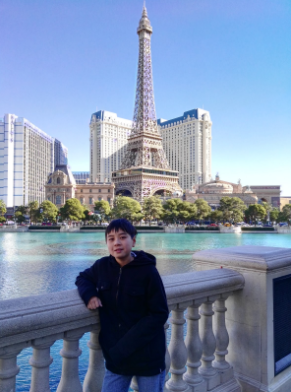

Hello! My name is Evan Xu, a bright, ingenious, and adamant student at Dublin High School. I live in a small city known as Dublin, from the state of California. Going further into my experience at high school, I plan on becoming a
game developer in the future. I have studied and took multiple coding classes online to prepare for my career, and I am planning to take the APCS next year! I have appointed my path to Computer Science, thus going further into
game development, as I believe that the creation of virtual reality is one of the most prominent creations of this century. On side to that, I love to play video games.
I am an innovative, flexible, passionate thinker and a considerate person. I am easily cooperated with, making me a uncomplicated person to work and collaborate with to get something complete. Going further into my career
choice, I believe that the key aspect to creating quality and successful work is working as a team. With all the team members' strengths and weaknesses organized, we can all use our strengths for the greater good, while improving
our weakness by working and communicating with each other. Even so, each team member must be adaptable, understanding, cooperative, and contributing.
Other than concentrating too much and focusing all my attention on my studies, I have many outside activities I attend. Such include GLI(Global Leadership Initiative), Robotics, and Tennis. I believe that learning Robotics
is a substantial way of understanding how programming applies to many real world jobs and machines, and how programming can be used not just in the virtual world. GLI is also a great organization that I joined outside of my school.
The club runs by other high school students around the bay area, and participates in many volunteer work and meetings. I believe that the club was the perfect choice to not just provide myself with my social hours, but also improve
my people skills and speaking skills. I believe that these characteristics is vital for pursuing my career, and apply to many real world scenarios, such as advertising and presenting new products.
Overall, I like to describe myself as motivated and innovative. I love to design and brainstorm ideas. I making the most of myself; trying the best I can to further pursue my career pathway, attending clubs and activities
that I believe will be most sufficient to my success. This is my overview, and please feel free to further explore my site!
